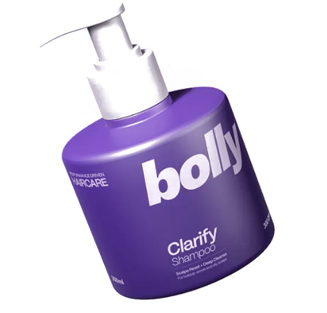

Fast Results
Visible reduction in flaking in as little as one week when used as directed. Gentle enough for frequent use.
A gentle, science-backed clarifying shampoo that removes flakes, soothes irritation, and restores healthy balance — without stripping natural oils.

Visible reduction in flaking in as little as one week when used as directed. Gentle enough for frequent use.
Powered by botanical actives and nourishing vitamins — free from harsh sulfates and unnecessary additives.
Recyclable packaging and mindful sourcing — effective care with a smaller footprint.
Our formula focuses on calming and clarifying without over-drying — thoughtfully blended to reduce visible flakes while preserving moisture.
"Within two weeks my scalp felt calm and flakes were visibly reduced. Gentle, pleasant scent and no tightness."
— Priya, Mumbai
"This is the first product that helped without stripping color — my hair stayed vibrant and the scalp improved."
— Arjun, Delhi
"Mild enough for regular use and effective enough that the whole family now rotates it into our routine."
— Meera, Pune
Learn the easy steps to maintain a calm, healthy scalp that resists flakes and irritation.
Read article →A quick primer to help you pick products that protect both color and scalp health.
Read article →Start with 2–3 times per week; adjust to your scalp's needs. Some users prefer alternating with a gentle daily cleanser.
Yes — the formula is color-safe and designed not to strip dye when used as directed.